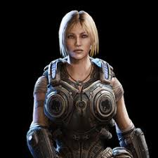
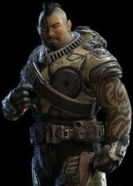

| Personajes |
CGO |
Información |
Imagen |
| Marcus Fenix |
Sí |
Marcus Fenix es el protagonista principal de la saga "Gears of War". Es un valiente soldado y líder nato, conocido por su determinación y habilidades en combate. Marcus fue encarcelado al principio de la guerra por desobedecer órdenes, pero más tarde fue liberado para liderar el Escuadrón Delta en la lucha contra los Locust. |
|
| Dominic "Dom" Santiago |
Sí |
Dominic "Dom" Santiago es el mejor amigo de Marcus Fenix y un miembro clave del Escuadrón Delta. Dom es conocido por su lealtad, valentía y sentido del humor. A lo largo de la serie, busca desesperadamente a su esposa desaparecida, María Santiago. |
|
| Augustus Cole "Cole Train" |
Sí |
Augustus Cole, apodado "Cole Train", es un ex-estrella de Thrashball que se convirtió en un héroe de guerra. Es conocido por su personalidad carismática, su optimismo y su habilidad para levantar el ánimo de sus compañeros en los momentos más oscuros. |
|
| Damon Baird |
Sí |
Damon Baird es un ingeniero talentoso y un miembro vital del Escuadrón Delta. Es conocido por su inteligencia, sarcasmo y habilidades técnicas. Baird a menudo proporciona soluciones ingeniosas para los problemas que enfrenta el equipo. |
|
| Anya Stroud |
Sí |
Anya Stroud es una oficial de comunicaciones y más tarde una líder militar. Es una figura clave en la lucha contra los Locust y los Lambent. A lo largo de la serie, Anya demuestra ser valiente y decidida, brindando apoyo vital al Escuadrón Delta. |
 |
| Kait Diaz |
Sí |
Kait Diaz es un personaje central en la saga "Gears of War", introducido en "Gears of War 4". Es una joven valiente con un misterioso linaje y un profundo sentido de la determinación. Kait se une al Escuadrón Delta para luchar contra la creciente amenaza de los Swarm. |
|
| Delmont "Del" Walker |
Sí |
Delmont "Del" Walker es un amigo de la infancia de Kait y su compañero en el Escuadrón Delta. Es un soldado valiente con un fuerte sentido del compañerismo. Del juega un papel importante en la lucha contra los Swarm y en la búsqueda de respuestas sobre el pasado de Kait. |
|
| J.D. Fenix |
Sí |
JD Fenix es el hijo de Marcus Fenix y un personaje central en "Gears of War 4" y "Gears 5". Es un soldado talentoso y decidido que lucha junto a sus amigos para enfrentar la creciente amenaza de los Swarm. |
|
| Victor Hoffman |
Sí |
Victor Hoffman es un líder militar veterano y una figura clave en la lucha contra los Locust. Como oficial de alto rango, Hoffman desempeña un papel crucial en la coordinación de las operaciones militares y en la toma de decisiones estratégicas para proteger a la humanidad. |
|
| Anthony Carmine |
Sí |
Anthony Carmine fue un joven soldado de la Coalición de Gobiernos Ordenados (CGO) conocido por su valentía y su disposición para enfrentarse a los Locust. Aunque era un novato, Anthony luchó junto a su hermano Benjamin Carmine en varias misiones antes de su trágica muerte en combate. |
|
| Benjamin Carmine |
Sí |
Benjamin Carmine, apodado "Ben", era un soldado joven y valiente que se unió al Escuadrón Delta durante la Guerra Locust. Era el hermano menor de Anthony Carmine. Benjamin luchó con coraje y determinación, pero lamentablemente perdió la vida en combate. |
|
| Tai Kaliso |
Sí |
Tai Kaliso era un guerrero de la COG conocido por su sabiduría y su conexión espiritual con la naturaleza. Tai fue capturado por los Locust y sometido a tortura, pero mantuvo su determinación y dignidad hasta el final. Su sacrificio inspiró a sus compañeros a seguir luchando. |
 |
| Clayton Carmine |
Sí |
Clayton Carmine, apodado "Clay", es otro miembro de la familia Carmine que se une al Escuadrón Delta. Es conocido por su valentía y su espíritu combativo, así como por llevar un casco con una marca distintiva en forma de estrella. A lo largo de la serie, Clay lucha con honor y determinación. |
 |
| Samantha "Sam" Byrne |
Sí |
Samantha "Sam" Byrne es una soldado valiente y una luchadora feroz en la guerra contra los Locust y los Lambent. Es conocida por su lealtad hacia sus compañeros y su capacidad para mantener la calma en situaciones peligrosas. A lo largo de la serie, Sam demuestra ser una aliada invaluable en la lucha por la supervivencia de la humanidad. |
|
| Sofia Hendrik |
Sí |
Sofia Hendrik es una científica brillante y una líder clave en la investigación de la tecnología Locust y Lambent. Su experiencia es fundamental para entender y combatir estas amenazas. A lo largo de la serie, Sofia trabaja incansablemente para desarrollar estrategias y armas que puedan inclinar la balanza a favor de la humanidad. |
|
| Garron Paduk |
Sí |
Garron Paduk es un ex miembro de la Unión de Repúblicas Independientes (URI) que se une al Escuadrón Delta en su lucha contra los Locust y los Lambent. Es conocido por su actitud brusca y su experiencia en combate, así como por sus habilidades para sobrevivir en entornos hostiles. |
|
| President Richard Prescott. |
Sí |
Richard Prescott fue el presidente de la Coalición de Gobiernos Ordenados (CGO) durante la Guerra Locust. Conocido por tomar decisiones controvertidas y difíciles, como la Operación: Tormenta de Fuego, Prescott priorizó la supervivencia de la humanidad frente a la amenaza Locust y más tarde la amenaza Lambent. |
|
| Dizzy Wallin |
Sí |
Dizzy Wallin, ex conductor de camiones convertido en soldado del CGO, es conocido por su actitud ruda y su característico sombrero de vaquero. Se unió al CGO para proteger a su familia y es valorado por su valentía y lealtad en la lucha contra los Locust. |
|